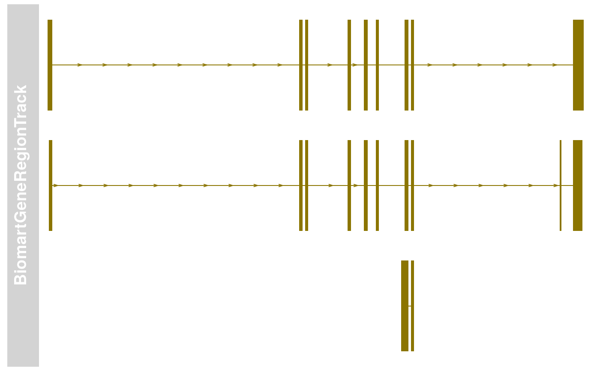
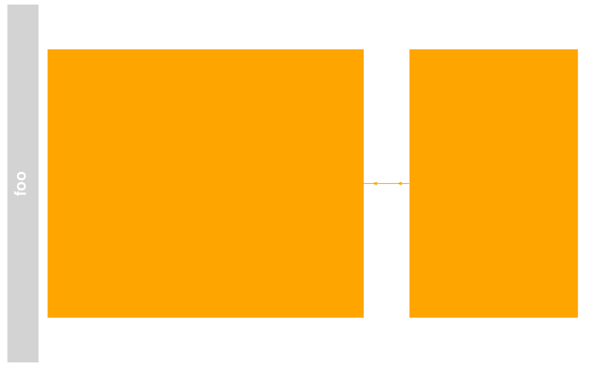
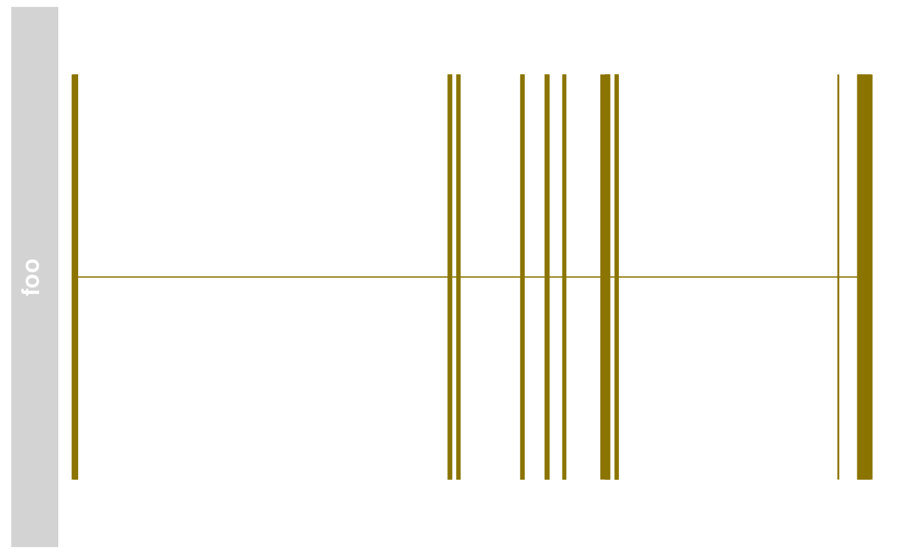
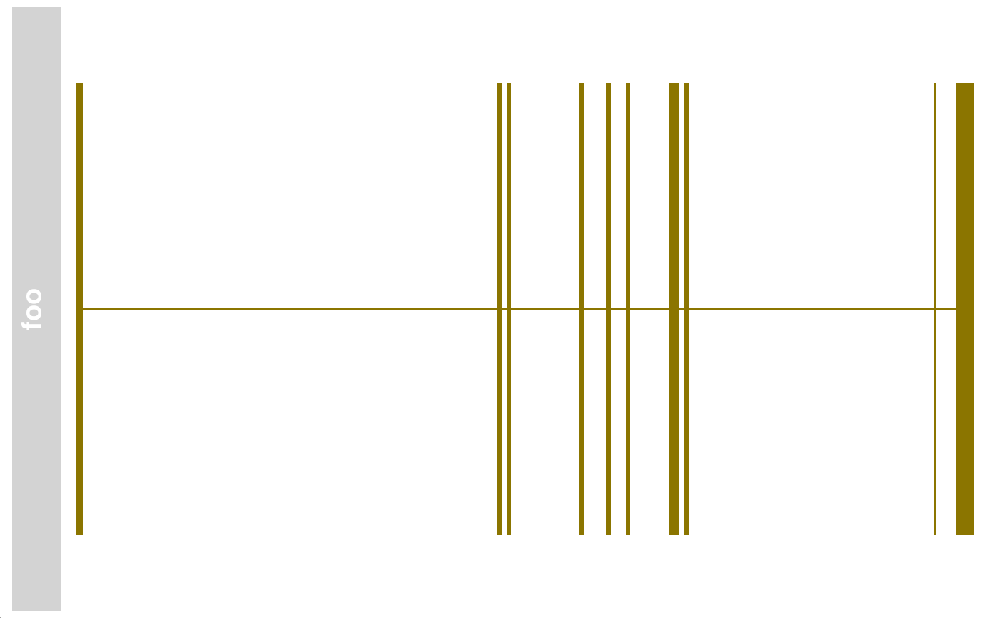

BiomartGeneRegionTrack class and methods
BiomartGeneRegionTrack-class.RdA class to hold gene model data for a genomic region fetched dynamically from EBI's Biomart Ensembl data source.
BiomartGeneRegionTrack(start, end, biomart, chromosome, strand, genome, stacking="squish", filters=list(), featureMap=NULL, name="BiomartGeneRegionTrack", symbol=NULL, gene=NULL, entrez=NULL, transcript=NULL, ...)
Arguments
| start | An integer scalar with the genomic start coordinates for the gene model range. |
|---|---|
| end | An integer scalar with the genomic end coordinates for the gene model range. |
| biomart | An optional |
| strand | Character scalar, the strand for which to fetch gene
information from Biomart. One in |
| chromosome | The chromosome on which the track's genomic ranges
are defined. A valid UCSC chromosome identifier. Please note that at
this stage only syntactic checking takes place, i.e., the argument
value needs to be a single integer, numeric character or a character
of the form |
| genome | The genome on which the track's ranges are
defined. Usually this is a valid UCSC genome identifier, however
this is not being formally checked at this point. If no mapping from
genome to Biomart Ensembl data source is possible, the
|
| stacking | The stacking type for overlapping items of the
track. One in |
| filters | A list of additional filters to be applied in the
Biomart query. See |
| featureMap | Named character vector or list to map between the fields in the Biomart data base and the features as they are used to construct the track. If multiple values are provided in a single list item, the package will use the first one that is defined in the selected Biomart. |
| name | Character scalar of the track's name used in the title panel when plotting. |
| symbol,transcript,gene,entrez | Character vector giving one or several gene symbols, Ensembl transcript identifiers, Ensembl gene identifiers, or ENTREZ gene identifiers, respectively. The genomic locus of their gene model will be fetch from Biomart instead of providing explicit start and end coordinates. |
| ... | Additional items which will all be interpreted as further
display parameters. See |
Objects from the class
Objects can be created using the constructor function
BiomartGeneRegionTrack.
Details
A track containing all gene models in a particular region as fetched
from EBI's Biomart service. Usually the user does not have to take
care of the Biomart connection, which will be established
automatically based on the provided genome and chromosome
information. However, for full flexibility a valid
Mart object may be passed on to the
constructor. Please note that this assumes a connection to one of the
Ensembl gene data sources, mapping the available query data back to
the internal object slots.
Value
The return value of the constructor function is a new object of class
BiomartGeneRegionTrack.
Slots
biomart:Object of class "MartOrNULL", the
connection to the Ensembl Biomart webservice.
filter:Object of class "list", additional
filters for the data base query.
start:Object of class "numeric", inherited
from class GeneRegionTrack. The start
coordinates of the annotation range. The coorrdinates for the
individual gene model items are stored in the range slot.
end:Object of class "numeric", inherited from
class GeneRegionTrack. The end
coordinates of the annotation range. The corrdinates for the
individual gene model items are stored in the range slot.
stacking:Object of class "character",
inherited from class StackedTrack
stacks:Object of class "environment",
inherited from class StackedTrack
range:Object of class GRanges,
inherited from class RangeTrack
chromosome:Object of class "character",
inherited from class RangeTrack
genome:Object of class "character", inherited
from class RangeTrack
dp:Object of class
DisplayPars, inherited from class
GdObject
name:Object of class "character", inherited
from class GdObject
imageMap:Extends
Class "GeneRegionTrack", directly.
Class "AnnotationTrack", by class "GeneRegionTrack", distance 2.
Class "StackedTrack", by class "GeneRegionTrack", distance 3.
Class "RangeTrack", by class "GeneRegionTrack", distance 4.
Class "GdObject", by class "GeneRegionTrack", distance 5.
Methods
In the following code chunks, obj is considered to be an
object of class BiomartGeneRegionTrack.
signature(.Object =
"BiomartGeneRegionTrack"): initialize the object.
Inherited methods:
signature(gdObject="BiomartGeneRegionTrack"): extract
the group membership for all track items. Usage: group(GdObject) Examples:
signature(gdObject="BiomartGeneRegionTrack",
value="character"): replace the grouping information for track
items. The replacement value must be a factor of appropriate
length or another vector that can be coerced into such. Usage: group<-(GdObject, value) Examples: group(obj) <- c("a", "a", "b", "c", "a")
signature(gdObject="BiomartGeneRegionTrack"):
return track item identifiers. Depending on the setting of the
optional argument lowest, these are either the group
identifiers or the individual item identifiers. Usage: identifier(GdObject, lowest=FALSE) Additional Arguments: lowest: return the lowest-level identifier, i.e.,
the item IDs, or the higher level group IDs which do not have to
be unqiue.
signature(gdObject="BiomartGeneRegionTrack",
value="character"): Set the track item identifiers. The
replacement value has to be a character vector of appropriate
length. This always replaces the group-level identifiers, so
essentially it is similar to groups<-. Usage: identifier<-(GdObject, value) Examples: identifier(obj) <- c("foo", "bar")
signature(GdObject="BiomartGeneRegionTrack"): Extract
the exon identifiers for all exons in the gene models. Usage: exon(GdObject) Examples:
signature(GdObject="BiomartGeneRegionTrack",
value="character"): replace the exon identifiers for all exons in
the gene model. The replacement value must be a character of
appropriate length or another vector that can be coerced into
such. Usage: exon<-(GdObject, value) Examples: exon(obj) <- paste("Exon", 1:5)
signature(GdObject="BiomartGeneRegionTrack"): Extract
the gene identifiers for all gene models. Usage: gene(GdObject) Examples:
signature(GdObject="BiomartGeneRegionTrack",
value="character"): replace the gene identifiers for all gene
models. The replacement value must be a character of
appropriate length or another vector that can be coerced into
such. Usage: gene<-(GdObject, value) Examples: gene(obj) <- paste("Gene", LETTERS[1:5])
signature(GdObject="BiomartGeneRegionTrack"): Extract
the human-readble gene symbol for all gene models. Usage: symbol(GdObject) Examples:
signature(GdObject="BiomartGeneRegionTrack",
value="character"): replace the human-readable gene symbol for
all gene models. The replacement value must be a character of
appropriate length or another vector that can be coerced into
such. Usage: gene<-(GdObject, value) Examples: symbol(obj) <- letters[1:5]
signature(GdObject="BiomartGeneRegionTrack"):
Extract the transcript identifiers for all transcripts in the
gene models. Usage: transcript(GdObject) Examples:
signature(GdObject="BiomartGeneRegionTrack",
value="character"): replace the transcript identifiers for
all transcripts in the gene model. The replacement value must
be a character of appropriate length or another vector that
can be coerced into such. Usage: transcript<-(GdObject, value) Examples: transcript(obj) <- paste("Exon", 1:5)
Internal methods:
signature(from="BiomartGeneRegionTrack",
to="UCSCData"): coerce to a UCSCData object for export to
the UCSC genome browser. Examples: as(obj, "UCSCData")
signature(GdObject="BiomartGeneRegionTrack"):
preprocess the track before plotting. This will collapse
overlapping track items based on the available resolution and
increase the width and height of all track objects to a minimum
value to avoid rendering issues. See collapsing for
details. Usage: collapseTrack(GdObject, diff=.pxResolution(coord="x")) Additional Arguments: diff: the minimum pixel width to display,
everything below that will be inflated to a width of
diff.Gviz:::collapseTrack(obj)
signature(object="BiomartGeneRegionTrack"): show a
human-readable summary of the object
signature(GdObject="BiomartGeneRegionTrack"): plot the
object to a graphics device. The return value of this method is
the input object, potentially updated during the plotting
operation. Internally, there are two modes in which the method can
be called. Either in 'prepare' mode, in which case no plotting is
done but the object is preprocessed based on the
available space, or in 'plotting' mode, in which case the actual
graphical output is created. Since subsetting of the object can be
potentially costly, this can be switched off in case subsetting
has already been performed before or is not necessary. Usage: drawGD(GdObject, minBase, maxBase, prepare=FALSE,
subset=TRUE, ...) Additional Arguments: minBase, maxBase: the coordinate range to
plot.prepare: run method in preparation or in
production mode.subset: subset the object to the visible region
or skip the potentially expensive subsetting operation....: all further arguments are ignored.Gviz:::drawGD(obj)Gviz:::drawGD(obj, minBase=1, maxBase=100)Gviz:::drawGD(obj, prepare=TRUE,
subset=FALSE)
signature(GdObject="BiomartGeneRegionTrack"): superpose a grid on top of a track. Usage: drawGrid(GdObject, from, to) Additional Arguments: from, to: integer scalars, draw grid
within a certain coordinates range. This needs to be supplied
for the plotting function to know the current genomic
coordinates.Gviz:::drawGrid(obj, from=10, to=100)
signature(GdObject="BiomartGeneRegionTrack"):
recompute the stacks based on the available space and on the
object's track items and stacking settings. Usage: setStacks(GdObject, from, to) Additional Arguments: from, to: integer scalars, compute
stacking within a certain coordinates range. This needs to be
supplied for the plotting function to know the current genomic
coordinates.Gviz:::setStacks(obj, from=1, to=100)
signature(GdObject="BiomartGeneRegionTrack"): return
the current stacking type. Usage: stacking(GdObject) Examples:
signature(GdObject="BiomartGeneRegionTrack",
value="character"): set the object's stacking type to one in
c(hide, dense, squish, pack,full). Usage: stacking<-(GdObject, value) Additional Arguments: value: replacement value.stacking(obj) <- "squish"
signature(GdObject="BiomartGeneRegionTrack"): return
the stack indices for each track item. Usage: stacks(GdObject) Examples: Gviz:::stacks(obj)
signature(x="BiomartGeneRegionTrack", i="ANY", j="ANY",
drop="ANY"): subset the items in the BiomartGeneRegionTrack
object. This is essentially similar to subsetting of the
GRanges object in the range
slot. For most applications, the subset method may be
more appropriate. Additional Arguments: i, j: subsetting indices, j is
ignored.drop: argument is ignored.obj[1:5]
signature(GdObject="BiomartGeneRegionTrack"):
return the chromosome for which the track is defined. Usage: chromosome(GdObject) Examples:
signature(GdObject="BiomartGeneRegionTrack"):
replace the value of the track's chromosome. This has to be a
valid UCSC chromosome identifier or an integer or character
scalar that can be reasonably coerced into one. Usage: chromosome<-(GdObject, value) Additional Arguments: value: replacement value.chromosome(obj) <- "chr12"
signature(x="BiomartGeneRegionTrack"): the
start or end coordinates of the track items, or their width in
genomic coordinates. Usage: start(x) end(x) width(x) Examples: width(obj)
signature(x="BiomartGeneRegionTrack"):
replace the start or end coordinates of the track items, or their
width. Usage: start<-(x, value) end<-(x, value) width<-(x, value) Additional Arguments: value: replacement value.start(obj) <- 1:10end(obj) <- 20:30width(obj) <- 1
signature(GdObject="BiomartGeneRegionTrack"): the
arithmetic mean of the track item's coordionates, i.e.,
(end(obj)-start(obj))/2. Usage: position(GdObject) Examples:
signature(GdObject="BiomartGeneRegionTrack"): return the
grouping information for track items. For certain sub-classes,
groups may be indicated by different color schemes when
plotting. See grouping for details. Usage: feature(GdObject) Examples:
signature(gdObject="BiomartGeneRegionTrack",
value="character"): set the grouping information for track
items. This has to be a factor vector (or another type of vector
that can be coerced into one) of the same length as the number of
items in the BiomartGeneRegionTrack. See grouping
for details. Usage: feature<-(GdObject, value) Additional Arguments: value: replacement value.feature(obj) <- c("a", "a", "b", "c", "a")
signature(x="BiomartGeneRegionTrack"): return the track's genome. Usage: genome(x) Examples: genome(obj)
signature(x="BiomartGeneRegionTrack"): set the track's
genome. Usually this has to be a valid UCSC identifier, however
this is not formally enforced here. Usage: genome<-(x, value) Additional Arguments: value: replacement value.genome(obj) <- "mm9"
signature(x="BiomartGeneRegionTrack"): return the number
of items in the track. Usage: length(x) Examples:
signature(x="BiomartGeneRegionTrack"): return the genomic
coordinates for the track as an object of class
IRanges. Usage: range(x) Examples:
signature(x="BiomartGeneRegionTrack"): return the genomic
coordinates for the track along with all additional annotation
information as an object of class GRanges. Usage: ranges(x) Examples: ranges(obj)
signature(x="BiomartGeneRegionTrack"): split a
BiomartGeneRegionTrack object by an appropriate factor vector (or
another vector that can be coerced into one). The output of this
operation is a list of objects of the same class as the input
object, all inheriting from class BiomartGeneRegionTrack. Usage: split(x, f, ...) Additional Arguments: f: the splitting factor....: all further arguments are ignored.
signature(x="BiomartGeneRegionTrack"): return a vector of
strand specifiers for all track items, in the form '+' for the
Watson strand, '-' for the Crick strand or '*' for either of the
two. Usage: strand(x) Examples: strand(obj)
signature(x="BiomartGeneRegionTrack"): replace the
strand information for the track items. The replacement value
needs to be an appropriate scalar or vector of strand values. Usage: strand<-(x, value) Additional Arguments: value: replacement value.strand(obj) <- "+"
signature(x="BiomartGeneRegionTrack"): return all
additional annotation information except for the genomic coordinates
for the track items as a data.frame. Usage: values(x) Examples: values(obj)
signature(from="BiomartGeneRegionTrack",
to="data.frame"): coerce the GRanges
object in the range slot into a regular data.frame. Examples: as(obj, "data.frame")
signature(x="BiomartGeneRegionTrack"): subset a
BiomartGeneRegionTrack by coordinates and sort if necessary. Usage: subset(x, from, to, sort=FALSE, ...) Additional Arguments: from, to: the coordinates range to subset
to.sort: sort the object after subsetting. Usually
not necessary....: additional arguments are ignored.
signature(x="BiomartGeneRegionTrack",
name="character"): list the value of the display parameter
name. See settings for details on display
parameters and customization. Usage: displayPars(x, name) Examples:
signature(x="BiomartGeneRegionTrack",
name="missing"): list the value of all available display
parameters. See settings for details on display
parameters and customization. Examples:
signature(x="BiomartGeneRegionTrack", name="character"):
alias for the displayPars method. See
settings for details on display parameters and
customization. Usage: getPar(x, name) Examples:
signature(x="BiomartGeneRegionTrack", name="missing"):
alias for the displayPars method. See
settings for details on display parameters and
customization. Examples:
signature(x="BiomartGeneRegionTrack",
value="list"): set display parameters using the values of the
named list in value. See settings for details
on display parameters and customization. Usage: displayPars<-(x, value) Examples: displayPars(obj) <- list(col="red", lwd=2)
signature(x="BiomartGeneRegionTrack", value="character"):
set the single display parameter name to value. Note
that display parameters in the BiomartGeneRegionTrack class are
pass-by-reference, so no re-assignmnet to the symbol obj is
necessary. See settings for details on display
parameters and customization. Usage: setPar(x, name, value) Additional Arguments: name: the name of the display parameter to set.
signature(x="BiomartGeneRegionTrack", value="list"): set
display parameters by the values of the named list in
value. Note that display parameters in the
BiomartGeneRegionTrack class are pass-by-reference, so no
re-assignmnet to the symbol obj is necessary. See
settings for details on display parameters and
customization. Examples:
signature(x="BiomartGeneRegionTrack"): return the value of
the name slot. Usage: names(x) Examples:
signature(x="BiomartGeneRegionTrack", value="character"):
set the value of the name slot. Usage: names<-(x, value) Examples: names(obj) <- "foo"
signature(ImageMap="BiomartGeneRegionTrack"): return the
coordinates from the internal image map. Usage: coords(ImageMap) Examples:
signature(x="BiomartGeneRegionTrack"): return the tags from the
internal image map. Usage: tags(x) Examples:
Display Parameters
The following display parameters are set for objects of class
BiomartGeneRegionTrack upon instantiation, unless one or more
of them have already been set by one of the optional sub-class
initializers, which always get precedence over these global defaults.
See settings for details on setting graphical parameters
for tracks.
C_segment="burlywood4": Character or integer scalar.
Fill color for annotation objects of type 'C_segment'.
D_segment="lightblue": Character or integer scalar.
Fill color for annotation objects of type 'C_segment'.
J_segment="dodgerblue2": Character or integer scalar.
Fill color for annotation objects of type 'C_segment'.
miRNA="cornflowerblue": Character or integer scalar.
Fill color for annotation objects of type 'L_segment'.
miRNA_pseudogene="cornsilk": Character or integer
scalar. Fill color for annotation objects of type 'miRNA_pseudogene'.
misc_RNA="cornsilk3": Character or integer scalar.
Fill color for annotation objects of type 'misc_RNA'.
misc_RNA_pseudogene="cornsilk4": Character or integer
scalar. Fill color for annotation objects of type 'misc_RNA_pseudogene'.
Mt_rRNA="yellow": Character or integer scalar. Fill
color for annotation objects of type 'Mt_rRNA'.
Mt_tRNA="darkgoldenrod": Character or integer scalar.
Fill color for annotation objects of type 'Mt_tRNA'.
Mt_tRNA_pseudogene="darkgoldenrod1": Character or
integer scalar. Fill color for annotation objects of type
'Mt_tRNA_pseudogene'.
protein_coding="#FFD58A": Character or integer
scalar. Fill color for annotation objects of type 'protein_coding'.
pseudogene="brown1": Character or integer scalar.
Fill color for annotation objects of type 'pseudogene'.
retrotransposed="blueviolet": Character or integer
scalar. Fill color for annotation objects of type 'retrotransposed'.
rRNA="darkolivegreen1": Character or integer scalar.
Fill color for annotation objects of type 'rRNA'.
rRNA_pseudogene="darkolivegreen": Character or
integer scalar. Fill color for annotation objects of type
'rRNA_pseudogene'.
scRNA="gold4": Character or integer scalar. Fill
color for annotation objects of type 'scRNA'.
scRNA_pseudogene="darkorange2": Character or integer
scalar. Fill color for annotation objects of type 'scRNA_pseudogene'.
snoRNA="cyan": Character or integer scalar. Fill
color for annotation objects of type 'snoRNA'.
snoRNA_pseudogene="cyan2": Character or integer
scalar. Fill color for annotation objects of type 'snoRNA_pseudogene'.
snRNA="coral": Character or integer scalar. Fill
color for annotation objects of type 'snRNA'.
snRNA_pseudogene="coral3": Character or integer
scalar. Fill color for annotation objects of type 'snRNA_pseudogene'.
tRNA_pseudogene="antiquewhite3": Character or integer
scalar. Fill color for annotation objects of type 'tRNA_pseudogene'.
utr3="#FFD58A": Character or integer scalar. Fill
color for annotation objects of type 'utr3'.
utr5="#FFD58A": Character or integer scalar. Fill
color for annotation objects of type 'utr5'.
V_segment="aquamarine": Character or integer scalar.
Fill color for annotation objects of type 'V_segment'.
verbose=FALSE: Logical scalar. Report data loading
events from Bioamart or retrieval from cache.
Additional display parameters are being inherited from the respective
parent classes. Note that not all of them may have an effect on the
plotting of BiomartGeneRegionTrack objects.
GeneRegionTrack: arrowHeadMaxWidth=20: Numeric scalar. The maximum
width of the arrow head in pixels if shape is arrow.arrowHeadWidth=10: Numeric scalar. The width of
the arrow head in pixels if shape is fixedArrow.col=NULL: Character or integer scalar. The border
color for all track items. Defaults to using the same color
as in fill, also taking into account different track
features.collapseTranscripts=FALSE: Logical or character
scalar. Can be one in gene, longest, shortest
or meta. Merge all transcripts of the same gene into
one single gene model. In the case of gene (or
TRUE), this will only keep the start location of the
first exon and the end location of the last exon from all
transcripts of the gene. For shortest and longest,
only the longest or shortest transcript model is retained.
For meta, a meta-transcript containing the union of
all exons is formed (essentially identical to the operation
reduce(geneModel)).exonAnnotation=NULL: Character scalar. Add
annotation information to the individual exon models. This
can be a value in symbol, gene, transcript,
exon or feature. Defaults to exon. Only
works if showExonId is not FALSE.fill="orange": Character or integer scalar. The
fill color for untyped items. This is also used to connect
grouped items. See grouping for details.min.distance=0: Numeric scalar. The minimum
pixel distance before collapsing range items, only if
collapse==TRUE. See collapsing for
details. Note that a value larger than 0 may lead to UTR
regions being merged to CDS regions, which in most cases is
not particularly useful.shape=c("smallArrow", "box"): Character scalar.
The shape in which to display the track items. Currently only
box, arrow, ellipse, and smallArrow
are implemented.showExonId=NULL: Logical scalar. Control whether
to plot the individual exon identifiers.thinBoxFeature=c("utr", "ncRNA", "utr3", "utr5",
"3UTR", "5UTR", "miRNA", "lincRNA", "three_prime_UTR",
"five_prime_UTR"): Character vector. A listing of feature
types that should be drawn with thin boxes. Typically those
are non-coding elements.transcriptAnnotation=NULL (Aliases:
transcriptAnnotation): Character scalar. Add annotation
information as transcript labels. This can be a value in
symbol, gene, transcript, exon
or feature. Defaults to symbol. Only works if
showId is not FALSE.
AnnotationTrack: cex=1: Numeric scalar. The font expansion factor
for item identifiers.cex.group=0.6: Numeric scalar. The font expansion
factor for the group-level annotation.col.line="darkgray": Character scalar. The color
used for connecting lines between grouped items. Defaults to
a light gray, but if set to NULL the same color as
for the first item in the group is used.featureAnnotation=NULL: Character scalar. Add
annotation information to the individual track elements. This
can be a value in id, group or feature.
Defaults to id. Only works if showFeatureId is
not FALSE.fontcolor.group="#808080" (Aliases:
fontcolor.group): Character or integer scalar. The font
color for the group-level annotation.fontcolor.item="white" (Aliases:
fontcolor.item): Character or integer scalar. The font color
for item identifiers.fontface.group=2: Numeric scalar. The font face
for the group-level annotation.fontfamily.group="sans": Character scalar. The
font family for the group-level annotation.fontsize.group=12: Numeric scalar. The font size
for the group-level annotation.groupAnnotation=NULL: Character scalar. Add
annotation information as group labels. This can be a value
in id, group or feature. Defaults to
group. Only works if showId is not FALSE.just.group="left" (Aliases: just.group):
Character scalar. the justification of group labels. Either
left, right, above or below.lex=1: Numeric scalar. The line expansion factor
for all track items. This is also used to connect grouped
items. See grouping for details.lineheight=1: Numeric scalar. The font line
height for item identifiers.lty="solid": Character or integer scalar. The
line type for all track items. This is also used to connect
grouped items. See grouping for details.lwd=1: Integer scalar. The line width for all
track items. This is also used to connect grouped items. See
grouping for details.mergeGroups=FALSE: Logical scalar. Merge fully
overlapping groups if collapse==TRUE.min.height=3: Numeric scalar. The minimum range
height in pixels to display. All ranges are expanded to this
size in order to avoid rendering issues. See collapsing
for details. For feathered bars indicating the strandedness
of grouped items this also controls the height of the arrow
feathers.min.width=1: Numeric scalar. The minimum range
width in pixels to display. All ranges are expanded to this
size in order to avoid rendering issues. See collapsing
for details.rotation=0: Numeric scalar. The degree of text
rotation for item identifiers.rotation.group=0: Numeric scalar. The degree of
text rotation for group labels.rotation.item=0: Numeric scalar. The degree of
text rotation for item identifiers.showFeatureId=FALSE: Logical scalar. Control
whether to plot the individual track item identifiers.showId=FALSE: Logical scalar. Control whether
to annotate individual groups.showOverplotting=FALSE: Logical scalar. Use a
color gradient to show the amount of overplotting for collapsed
items. This implies that collapse==TRUEsize=1: Numeric scalar. The relative size of
the track. Can be overridden in the plotTracks
function.
StackedTrack: reverseStacking=FALSE: Logical flag. Reverse
the y-ordering of stacked items. I.e., features that are
plotted on the bottom-most stacks will be moved to the top-most
stack and vice versa.stackHeight=0.75: Numeric between 0 and 1.
Controls the vertical size and spacing between stacked
elements. The number defines the proportion of the total
available space for the stack that is used to draw the glyphs.
E.g., a value of 0.5 means that half of the available vertical
drawing space (for each stacking line) is used for the glyphs,
and thus one quarter of the available space each is used for
spacing above and below the glyph. Defaults to 0.75.
GdObject: alpha=1: Numeric scalar. The transparency for
all track items.alpha.title=NULL: Numeric scalar. The transparency
for the title panel.background.legend="transparent": Integer or
character scalar. The background color for the legend.background.panel="transparent": Integer or
character scalar. The background color of the content panel.background.title="lightgray": Integer or character
scalar. The background color for the title panel.cex.axis=NULL: Numeric scalar. The expansion
factor for the axis annotation. Defaults to NULL, in
which case it is automatically determined based on the
available space.cex.title=NULL: Numeric scalar. The expansion
factor for the title panel. This effects the fontsize of both
the title and the axis, if any. Defaults to NULL,
which means that the text size is automatically adjusted to
the available space.col.axis="white": Integer or character scalar.
The font and line color for the y axis, if any.col.border.title="white": Integer or character
scalar. The border color for the title panels.col.frame="lightgray": Integer or character
scalar. The line color used for the panel frame, if
frame==TRUEcol.grid="#808080": Integer or character scalar.
Default line color for grid lines, both when type=="g"
in DataTracks and when display parameter
grid==TRUE.col.symbol=NULL: Integer or character scalar.
Default colors for plot symbols. Usually the same as the
global col parameter.col.title="white" (Aliases: fontcolor.title):
Integer or character scalar. The border color for the title panelscollapse=TRUE: Boolean controlling whether to
collapse the content of the track to accomodate the minimum
current device resolution. See collapsing for
details.fontcolor="black": Integer or character scalar.
The font color for all text, unless a more specific definition
exists.fontface=1: Integer or character scalar. The
font face for all text, unless a more specific definition exists.fontface.title=2: Integer or character scalar.
The font face for the title panels.fontfamily="sans": Integer or character scalar.
The font family for all text, unless a more specific definition
exists.fontfamily.title="sans": Integer or character
scalar. The font family for the title panels.fontsize=12: Numeric scalar. The font size for
all text, unless a more specific definition exists.frame=FALSE: Boolean. Draw a frame around the
track when plotting.grid=FALSE: Boolean, switching on/off the plotting
of a grid.h=-1: Integer scalar. Parameter controlling the
number of horizontal grid lines, see panel.grid
for details.lty.grid="solid": Integer or character scalar.
Default line type for grid lines, both when type=="g"
in DataTracks and when display parameter
grid==TRUE.lwd.border.title=1: Integer scalar. The border
width for the title panels.lwd.grid=1: Numeric scalar. Default line width
for grid lines, both when type=="g" in DataTracks
and when display parameter grid==TRUE.lwd.title=1: Integer scalar. The border width
for the title panelsreverseStrand=FALSE: Logical scalar. Set up the
plotting coordinates in 3' -> 5' direction if TRUE.
This will effectively mirror the plot on the vertical axis.rotation.title=90 (Aliases: rotation.title):
The rotation angle for the text in the title panel. Even
though this can be adjusted, the automatic resizing of the
title panel will currently not work, so use at own risk.showAxis=TRUE: Boolean controlling whether to
plot a y axis (only applies to track types where axes are
implemented).showTitle=TRUE: Boolean controlling whether to
plot a title panel. Although this can be set individually
for each track, in multi-track plots as created by
plotTracks there will still be an empty
placeholder in case any of the other tracks include a title.
The same holds true for axes. Note that the the title panel
background color could be set to transparent in order to
completely hide it.v=-1: Integer scalar. Parameter controlling the
number of vertical grid lines, see panel.grid
for details.
References
EBI Biomart webservice at http://www.biomart.org.
See also
GRanges
IRanges
Mart
getBM
panel.grid
useMart
Examples
# \dontshow{ ## Load some sample data data(bmTrack) # } ## Construct the object if (FALSE) { bmTrack <- BiomartGeneRegionTrack(start=26682683, end=26711643, chromosome=7, genome="mm9") } # \dontshow{ ## For some annoying reason the postscript device does not know about ## the sans font if(!interactive()) { font <- ps.options()$family displayPars(bmTrack) <- list(fontfamily=font, fontfamily.title=font) } # } ## Plotting plotTracks(bmTrack)#> [1] "BiomartGeneRegionTrack"## Subsetting and splitting subTrack <- subset(bmTrack, from=26700000, to=26705000) length(subTrack)#> [1] 21#> $ENSMUST00000005477 #> GeneRegionTrack 'foo' #> | genome: mm9 #> | active chromosome: chr7 #> | annotation features: 10 #> #> $ENSMUST00000072438 #> GeneRegionTrack 'foo' #> | genome: mm9 #> | active chromosome: chr7 #> | annotation features: 9 #> #> $ENSMUST00000144140 #> GeneRegionTrack 'foo' #> | genome: mm9 #> | active chromosome: chr7 #> | annotation features: 2 #>#> [1] 26682639 26696257 26696573 26698884 26699767 26700411 26701953 26702307 #> [9] 26711087 26682695 26696257 26696573 26698884 26699767 26700411 26701953 #> [17] 26702307 26710392 26711087 26701785 26702307end(bmTrack)#> [1] 26682874 26696419 26696722 26699044 26699943 26700552 26702140 26702448 #> [9] 26711643 26682874 26696419 26696722 26699044 26699943 26700552 26702140 #> [17] 26702448 26710418 26711578 26702140 26702449width(bmTrack)#> [1] 236 163 150 161 177 142 188 142 557 180 163 150 161 177 142 188 142 27 492 #> [20] 356 143position(bmTrack)#> [1] 26682756 26696338 26696648 26698964 26699855 26700482 26702046 26702378 #> [9] 26711365 26682784 26696338 26696648 26698964 26699855 26700482 26702046 #> [17] 26702378 26710405 26711332 26701962 26702378width(subTrack) <- width(subTrack)+100 strand(bmTrack)#> [1] "+" "+" "+" "+" "+" "+" "+" "+" "+" "+" "+" "+" "+" "+" "+" "+" "+" "+" "+" #> [20] "+" "+"#> chr7 #> "chr7"#> [1] "mm9"#> IRanges object with 21 ranges and 0 metadata columns: #> start end width #> <integer> <integer> <integer> #> [1] 26682639 26682874 236 #> [2] 26696257 26696419 163 #> [3] 26696573 26696722 150 #> [4] 26698884 26699044 161 #> [5] 26699767 26699943 177 #> ... ... ... ... #> [17] 26702307 26702448 142 #> [18] 26710392 26710418 27 #> [19] 26711087 26711578 492 #> [20] 26701785 26702140 356 #> [21] 26702307 26702449 143ranges(bmTrack)#> GRanges object with 21 ranges and 6 metadata columns: #> seqnames ranges strand | feature gene #> <Rle> <IRanges> <Rle> | <character> <character> #> [1] chr7 26682639-26682874 + | protein_coding ENSMUSG00000030483 #> [2] chr7 26696257-26696419 + | protein_coding ENSMUSG00000030483 #> [3] chr7 26696573-26696722 + | protein_coding ENSMUSG00000030483 #> [4] chr7 26698884-26699044 + | protein_coding ENSMUSG00000030483 #> [5] chr7 26699767-26699943 + | protein_coding ENSMUSG00000030483 #> ... ... ... ... . ... ... #> [17] chr7 26702307-26702448 + | protein_coding ENSMUSG00000030483 #> [18] chr7 26710392-26710418 + | protein_coding ENSMUSG00000030483 #> [19] chr7 26711087-26711578 + | protein_coding ENSMUSG00000030483 #> [20] chr7 26701785-26702140 + | protein_coding ENSMUSG00000030483 #> [21] chr7 26702307-26702449 + | protein_coding ENSMUSG00000030483 #> exon transcript symbol rank #> <character> <character> <character> <numeric> #> [1] ENSMUSE00000742021 ENSMUST00000072438 Cyp2b10 1 #> [2] ENSMUSE00000449901 ENSMUST00000072438 Cyp2b10 2 #> [3] ENSMUSE00000199425 ENSMUST00000072438 Cyp2b10 3 #> [4] ENSMUSE00000511070 ENSMUST00000072438 Cyp2b10 4 #> [5] ENSMUSE00000514929 ENSMUST00000072438 Cyp2b10 5 #> ... ... ... ... ... #> [17] ENSMUSE00000507557 ENSMUST00000005477 Cyp2b10 8 #> [18] ENSMUSE00000496705 ENSMUST00000005477 Cyp2b10 9 #> [19] ENSMUSE00000750625 ENSMUST00000005477 Cyp2b10 10 #> [20] ENSMUSE00000736922 ENSMUST00000144140 Cyp2b10 1 #> [21] ENSMUSE00000748299 ENSMUST00000144140 Cyp2b10 2 #> ------- #> seqinfo: 1 sequence from an unspecified genome; no seqlengths#> [1] "Cyp2b10" "Cyp2b10" "Cyp2b10" "Cyp2b10" "Cyp2b10" "Cyp2b10" "Cyp2b10" #> [8] "Cyp2b10" "Cyp2b10" "Cyp2b10" "Cyp2b10" "Cyp2b10" "Cyp2b10" "Cyp2b10" #> [15] "Cyp2b10" "Cyp2b10" "Cyp2b10" "Cyp2b10" "Cyp2b10" "Cyp2b10" "Cyp2b10"#> [1] "ENSMUSE00000742021" "ENSMUSE00000449901" "ENSMUSE00000199425" #> [4] "ENSMUSE00000511070" "ENSMUSE00000514929" "ENSMUSE00000199423" #> [7] "ENSMUSE00000535814" "ENSMUSE00000507557" "ENSMUSE00000498616" #> [10] "ENSMUSE00000489385" "ENSMUSE00000449901" "ENSMUSE00000199425" #> [13] "ENSMUSE00000511070" "ENSMUSE00000514929" "ENSMUSE00000199423" #> [16] "ENSMUSE00000535814" "ENSMUSE00000507557" "ENSMUSE00000496705" #> [19] "ENSMUSE00000750625" "ENSMUSE00000736922" "ENSMUSE00000748299"#> [1] "protein_coding" "protein_coding" "protein_coding" "protein_coding" #> [5] "protein_coding" "protein_coding" "protein_coding" "protein_coding" #> [9] "protein_coding" "protein_coding" "protein_coding" "protein_coding" #> [13] "protein_coding" "protein_coding" "protein_coding" "protein_coding" #> [17] "protein_coding" "protein_coding" "protein_coding" "protein_coding" #> [21] "protein_coding"#> [1] "ENSMUSE00000742021" "ENSMUSE00000449901" "ENSMUSE00000199425" #> [4] "ENSMUSE00000511070" "ENSMUSE00000514929" "ENSMUSE00000199423" #> [7] "ENSMUSE00000535814" "ENSMUSE00000507557" "ENSMUSE00000498616" #> [10] "ENSMUSE00000489385" "ENSMUSE00000449901" "ENSMUSE00000199425" #> [13] "ENSMUSE00000511070" "ENSMUSE00000514929" "ENSMUSE00000199423" #> [16] "ENSMUSE00000535814" "ENSMUSE00000507557" "ENSMUSE00000496705" #> [19] "ENSMUSE00000750625" "ENSMUSE00000736922" "ENSMUSE00000748299"#> [1] "ENSMUSG00000030483" "ENSMUSG00000030483" "ENSMUSG00000030483" #> [4] "ENSMUSG00000030483" "ENSMUSG00000030483" "ENSMUSG00000030483" #> [7] "ENSMUSG00000030483" "ENSMUSG00000030483" "ENSMUSG00000030483" #> [10] "ENSMUSG00000030483" "ENSMUSG00000030483" "ENSMUSG00000030483" #> [13] "ENSMUSG00000030483" "ENSMUSG00000030483" "ENSMUSG00000030483" #> [16] "ENSMUSG00000030483" "ENSMUSG00000030483" "ENSMUSG00000030483" #> [19] "ENSMUSG00000030483" "ENSMUSG00000030483" "ENSMUSG00000030483"#> [1] "Cyp2b10" "Cyp2b10" "Cyp2b10" "Cyp2b10" "Cyp2b10" "Cyp2b10" "Cyp2b10" #> [8] "Cyp2b10" "Cyp2b10" "Cyp2b10" "Cyp2b10" "Cyp2b10" "Cyp2b10" "Cyp2b10" #> [15] "Cyp2b10" "Cyp2b10" "Cyp2b10" "Cyp2b10" "Cyp2b10" "Cyp2b10" "Cyp2b10"#> [1] "ENSMUST00000072438" "ENSMUST00000072438" "ENSMUST00000072438" #> [4] "ENSMUST00000072438" "ENSMUST00000072438" "ENSMUST00000072438" #> [7] "ENSMUST00000072438" "ENSMUST00000072438" "ENSMUST00000072438" #> [10] "ENSMUST00000005477" "ENSMUST00000005477" "ENSMUST00000005477" #> [13] "ENSMUST00000005477" "ENSMUST00000005477" "ENSMUST00000005477" #> [16] "ENSMUST00000005477" "ENSMUST00000005477" "ENSMUST00000005477" #> [19] "ENSMUST00000005477" "ENSMUST00000144140" "ENSMUST00000144140"values(bmTrack)#> feature gene exon transcript #> 1 protein_coding ENSMUSG00000030483 ENSMUSE00000742021 ENSMUST00000072438 #> 2 protein_coding ENSMUSG00000030483 ENSMUSE00000449901 ENSMUST00000072438 #> 3 protein_coding ENSMUSG00000030483 ENSMUSE00000199425 ENSMUST00000072438 #> 4 protein_coding ENSMUSG00000030483 ENSMUSE00000511070 ENSMUST00000072438 #> 5 protein_coding ENSMUSG00000030483 ENSMUSE00000514929 ENSMUST00000072438 #> 6 protein_coding ENSMUSG00000030483 ENSMUSE00000199423 ENSMUST00000072438 #> 7 protein_coding ENSMUSG00000030483 ENSMUSE00000535814 ENSMUST00000072438 #> 8 protein_coding ENSMUSG00000030483 ENSMUSE00000507557 ENSMUST00000072438 #> 9 protein_coding ENSMUSG00000030483 ENSMUSE00000498616 ENSMUST00000072438 #> 10 protein_coding ENSMUSG00000030483 ENSMUSE00000489385 ENSMUST00000005477 #> 11 protein_coding ENSMUSG00000030483 ENSMUSE00000449901 ENSMUST00000005477 #> 12 protein_coding ENSMUSG00000030483 ENSMUSE00000199425 ENSMUST00000005477 #> 13 protein_coding ENSMUSG00000030483 ENSMUSE00000511070 ENSMUST00000005477 #> 14 protein_coding ENSMUSG00000030483 ENSMUSE00000514929 ENSMUST00000005477 #> 15 protein_coding ENSMUSG00000030483 ENSMUSE00000199423 ENSMUST00000005477 #> 16 protein_coding ENSMUSG00000030483 ENSMUSE00000535814 ENSMUST00000005477 #> 17 protein_coding ENSMUSG00000030483 ENSMUSE00000507557 ENSMUST00000005477 #> 18 protein_coding ENSMUSG00000030483 ENSMUSE00000496705 ENSMUST00000005477 #> 19 protein_coding ENSMUSG00000030483 ENSMUSE00000750625 ENSMUST00000005477 #> 20 protein_coding ENSMUSG00000030483 ENSMUSE00000736922 ENSMUST00000144140 #> 21 protein_coding ENSMUSG00000030483 ENSMUSE00000748299 ENSMUST00000144140 #> symbol rank #> 1 Cyp2b10 1 #> 2 Cyp2b10 2 #> 3 Cyp2b10 3 #> 4 Cyp2b10 4 #> 5 Cyp2b10 5 #> 6 Cyp2b10 6 #> 7 Cyp2b10 7 #> 8 Cyp2b10 8 #> 9 Cyp2b10 9 #> 10 Cyp2b10 1 #> 11 Cyp2b10 2 #> 12 Cyp2b10 3 #> 13 Cyp2b10 4 #> 14 Cyp2b10 5 #> 15 Cyp2b10 6 #> 16 Cyp2b10 7 #> 17 Cyp2b10 8 #> 18 Cyp2b10 9 #> 19 Cyp2b10 10 #> 20 Cyp2b10 1 #> 21 Cyp2b10 2#> [1] "ENSMUST00000072438" "ENSMUST00000072438" "ENSMUST00000072438" #> [4] "ENSMUST00000072438" "ENSMUST00000072438" "ENSMUST00000072438" #> [7] "ENSMUST00000072438" "ENSMUST00000072438" "ENSMUST00000072438" #> [10] "ENSMUST00000005477" "ENSMUST00000005477" "ENSMUST00000005477" #> [13] "ENSMUST00000005477" "ENSMUST00000005477" "ENSMUST00000005477" #> [16] "ENSMUST00000005477" "ENSMUST00000005477" "ENSMUST00000005477" #> [19] "ENSMUST00000005477" "ENSMUST00000144140" "ENSMUST00000144140"#> [1] "Group 1" "Group 1"plotTracks(subTrack)#> [1] "squish"## coercion as(bmTrack, "data.frame")#> X.seqnames X.start X.end X.width X.strand X.feature #> 1 chr7 26682639 26682874 236 + protein_coding #> 2 chr7 26696257 26696419 163 + protein_coding #> 3 chr7 26696573 26696722 150 + protein_coding #> 4 chr7 26698884 26699044 161 + protein_coding #> 5 chr7 26699767 26699943 177 + protein_coding #> 6 chr7 26700411 26700552 142 + protein_coding #> 7 chr7 26701953 26702140 188 + protein_coding #> 8 chr7 26702307 26702448 142 + protein_coding #> 9 chr7 26711087 26711643 557 + protein_coding #> 10 chr7 26682695 26682874 180 + protein_coding #> 11 chr7 26696257 26696419 163 + protein_coding #> 12 chr7 26696573 26696722 150 + protein_coding #> 13 chr7 26698884 26699044 161 + protein_coding #> 14 chr7 26699767 26699943 177 + protein_coding #> 15 chr7 26700411 26700552 142 + protein_coding #> 16 chr7 26701953 26702140 188 + protein_coding #> 17 chr7 26702307 26702448 142 + protein_coding #> 18 chr7 26710392 26710418 27 + protein_coding #> 19 chr7 26711087 26711578 492 + protein_coding #> 20 chr7 26701785 26702140 356 + protein_coding #> 21 chr7 26702307 26702449 143 + protein_coding #> X.gene X.exon X.transcript X.symbol X.rank #> 1 ENSMUSG00000030483 ENSMUSE00000742021 ENSMUST00000072438 Cyp2b10 1 #> 2 ENSMUSG00000030483 ENSMUSE00000449901 ENSMUST00000072438 Cyp2b10 2 #> 3 ENSMUSG00000030483 ENSMUSE00000199425 ENSMUST00000072438 Cyp2b10 3 #> 4 ENSMUSG00000030483 ENSMUSE00000511070 ENSMUST00000072438 Cyp2b10 4 #> 5 ENSMUSG00000030483 ENSMUSE00000514929 ENSMUST00000072438 Cyp2b10 5 #> 6 ENSMUSG00000030483 ENSMUSE00000199423 ENSMUST00000072438 Cyp2b10 6 #> 7 ENSMUSG00000030483 ENSMUSE00000535814 ENSMUST00000072438 Cyp2b10 7 #> 8 ENSMUSG00000030483 ENSMUSE00000507557 ENSMUST00000072438 Cyp2b10 8 #> 9 ENSMUSG00000030483 ENSMUSE00000498616 ENSMUST00000072438 Cyp2b10 9 #> 10 ENSMUSG00000030483 ENSMUSE00000489385 ENSMUST00000005477 Cyp2b10 1 #> 11 ENSMUSG00000030483 ENSMUSE00000449901 ENSMUST00000005477 Cyp2b10 2 #> 12 ENSMUSG00000030483 ENSMUSE00000199425 ENSMUST00000005477 Cyp2b10 3 #> 13 ENSMUSG00000030483 ENSMUSE00000511070 ENSMUST00000005477 Cyp2b10 4 #> 14 ENSMUSG00000030483 ENSMUSE00000514929 ENSMUST00000005477 Cyp2b10 5 #> 15 ENSMUSG00000030483 ENSMUSE00000199423 ENSMUST00000005477 Cyp2b10 6 #> 16 ENSMUSG00000030483 ENSMUSE00000535814 ENSMUST00000005477 Cyp2b10 7 #> 17 ENSMUSG00000030483 ENSMUSE00000507557 ENSMUST00000005477 Cyp2b10 8 #> 18 ENSMUSG00000030483 ENSMUSE00000496705 ENSMUST00000005477 Cyp2b10 9 #> 19 ENSMUSG00000030483 ENSMUSE00000750625 ENSMUST00000005477 Cyp2b10 10 #> 20 ENSMUSG00000030483 ENSMUSE00000736922 ENSMUST00000144140 Cyp2b10 1 #> 21 ENSMUSG00000030483 ENSMUSE00000748299 ENSMUST00000144140 Cyp2b10 2 #> feature gene exon transcript #> 1 protein_coding ENSMUSG00000030483 ENSMUSE00000742021 ENSMUST00000072438 #> 2 protein_coding ENSMUSG00000030483 ENSMUSE00000449901 ENSMUST00000072438 #> 3 protein_coding ENSMUSG00000030483 ENSMUSE00000199425 ENSMUST00000072438 #> 4 protein_coding ENSMUSG00000030483 ENSMUSE00000511070 ENSMUST00000072438 #> 5 protein_coding ENSMUSG00000030483 ENSMUSE00000514929 ENSMUST00000072438 #> 6 protein_coding ENSMUSG00000030483 ENSMUSE00000199423 ENSMUST00000072438 #> 7 protein_coding ENSMUSG00000030483 ENSMUSE00000535814 ENSMUST00000072438 #> 8 protein_coding ENSMUSG00000030483 ENSMUSE00000507557 ENSMUST00000072438 #> 9 protein_coding ENSMUSG00000030483 ENSMUSE00000498616 ENSMUST00000072438 #> 10 protein_coding ENSMUSG00000030483 ENSMUSE00000489385 ENSMUST00000005477 #> 11 protein_coding ENSMUSG00000030483 ENSMUSE00000449901 ENSMUST00000005477 #> 12 protein_coding ENSMUSG00000030483 ENSMUSE00000199425 ENSMUST00000005477 #> 13 protein_coding ENSMUSG00000030483 ENSMUSE00000511070 ENSMUST00000005477 #> 14 protein_coding ENSMUSG00000030483 ENSMUSE00000514929 ENSMUST00000005477 #> 15 protein_coding ENSMUSG00000030483 ENSMUSE00000199423 ENSMUST00000005477 #> 16 protein_coding ENSMUSG00000030483 ENSMUSE00000535814 ENSMUST00000005477 #> 17 protein_coding ENSMUSG00000030483 ENSMUSE00000507557 ENSMUST00000005477 #> 18 protein_coding ENSMUSG00000030483 ENSMUSE00000496705 ENSMUST00000005477 #> 19 protein_coding ENSMUSG00000030483 ENSMUSE00000750625 ENSMUST00000005477 #> 20 protein_coding ENSMUSG00000030483 ENSMUSE00000736922 ENSMUST00000144140 #> 21 protein_coding ENSMUSG00000030483 ENSMUSE00000748299 ENSMUST00000144140 #> symbol rank #> 1 Cyp2b10 1 #> 2 Cyp2b10 2 #> 3 Cyp2b10 3 #> 4 Cyp2b10 4 #> 5 Cyp2b10 5 #> 6 Cyp2b10 6 #> 7 Cyp2b10 7 #> 8 Cyp2b10 8 #> 9 Cyp2b10 9 #> 10 Cyp2b10 1 #> 11 Cyp2b10 2 #> 12 Cyp2b10 3 #> 13 Cyp2b10 4 #> 14 Cyp2b10 5 #> 15 Cyp2b10 6 #> 16 Cyp2b10 7 #> 17 Cyp2b10 8 #> 18 Cyp2b10 9 #> 19 Cyp2b10 10 #> 20 Cyp2b10 1 #> 21 Cyp2b10 2as(bmTrack, "UCSCData")#> UCSC track 'foo' #> UCSCData object with 3 ranges and 6 metadata columns: #> seqnames ranges strand | id name #> <Rle> <IRanges> <Rle> | <character> <character> #> [1] chr7 26682695-26711578 + | ENSMUST00000005477 Cyp2b10 #> [2] chr7 26682639-26711643 + | ENSMUST00000072438 Cyp2b10 #> [3] chr7 26701785-26702449 + | ENSMUST00000144140 Cyp2b10 #> itemRgb blockCount blockSizes blockStarts #> <character> <numeric> <character> <character> #> [1] gold4 10 180,163,150,161,177,.. 0,13562,13878,16189,.. #> [2] gold4 9 236,163,150,161,177,.. 0,13618,13934,16245,.. #> [3] gold4 2 356,143 0,522 #> ------- #> seqinfo: 1 sequence from an unspecified genome; no seqlengths#> NULLtags(bmTrack)#> NULLcoords(bmTrack)#> x1 y1 x2 y2 #> ENSMUSE00000742021 38.11788 67.5 41.78433 436.5 #> ENSMUSE00000449901 250.58527 67.5 253.11279 436.5 #> ENSMUSE00000199425 255.51549 67.5 257.84018 436.5 #> ENSMUSE00000511070 291.57161 67.5 294.06792 436.5 #> ENSMUSE00000514929 305.34813 67.5 308.09407 436.5 #> ENSMUSE00000199423 315.39579 67.5 317.59566 436.5 #> ENSMUSE00000535814 339.45400 67.5 342.37157 436.5 #> ENSMUSE00000507557 344.97709 67.5 347.17697 436.5 #> ENSMUSE00000498616 481.96224 67.5 490.63693 436.5 #> ENSMUSE00000489385 38.99158 67.5 41.78433 436.5 #> ENSMUSE00000449901.1 250.58527 67.5 253.11279 436.5 #> ENSMUSE00000199425.1 255.51549 67.5 257.84018 436.5 #> ENSMUSE00000511070.1 291.57161 67.5 294.06792 436.5 #> ENSMUSE00000514929.1 305.34813 67.5 308.09407 436.5 #> ENSMUSE00000199423.1 315.39579 67.5 317.59566 436.5 #> ENSMUSE00000535814.1 339.45400 67.5 342.37157 436.5 #> ENSMUSE00000507557.1 344.97709 67.5 347.17697 436.5 #> ENSMUSE00000496705 470.82245 67.5 471.82097 436.5 #> ENSMUSE00000750625 481.96224 67.5 489.62280 436.5 #> ENSMUSE00000736922 336.83287 67.5 342.37157 436.5 #> ENSMUSE00000748299 344.97709 67.5 347.19257 436.5tags(bmTrack)#> $fill #> ENSMUSE00000742021 ENSMUSE00000449901 ENSMUSE00000199425 #> "gold4" "gold4" "gold4" #> ENSMUSE00000511070 ENSMUSE00000514929 ENSMUSE00000199423 #> "gold4" "gold4" "gold4" #> ENSMUSE00000535814 ENSMUSE00000507557 ENSMUSE00000498616 #> "gold4" "gold4" "gold4" #> ENSMUSE00000489385 ENSMUSE00000449901.1 ENSMUSE00000199425.1 #> "gold4" "gold4" "gold4" #> ENSMUSE00000511070.1 ENSMUSE00000514929.1 ENSMUSE00000199423.1 #> "gold4" "gold4" "gold4" #> ENSMUSE00000535814.1 ENSMUSE00000507557.1 ENSMUSE00000496705 #> "gold4" "gold4" "gold4" #> ENSMUSE00000750625 ENSMUSE00000736922 ENSMUSE00000748299 #> "gold4" "gold4" "gold4" #> #> $strand #> ENSMUSE00000742021 ENSMUSE00000449901 ENSMUSE00000199425 #> "+" "+" "+" #> ENSMUSE00000511070 ENSMUSE00000514929 ENSMUSE00000199423 #> "+" "+" "+" #> ENSMUSE00000535814 ENSMUSE00000507557 ENSMUSE00000498616 #> "+" "+" "+" #> ENSMUSE00000489385 ENSMUSE00000449901.1 ENSMUSE00000199425.1 #> "+" "+" "+" #> ENSMUSE00000511070.1 ENSMUSE00000514929.1 ENSMUSE00000199423.1 #> "+" "+" "+" #> ENSMUSE00000535814.1 ENSMUSE00000507557.1 ENSMUSE00000496705 #> "+" "+" "+" #> ENSMUSE00000750625 ENSMUSE00000736922 ENSMUSE00000748299 #> "+" "+" "+" #> #> $text #> ENSMUSE00000742021 ENSMUSE00000449901 ENSMUSE00000199425 #> "ENSMUSE00000742021" "ENSMUSE00000449901" "ENSMUSE00000199425" #> ENSMUSE00000511070 ENSMUSE00000514929 ENSMUSE00000199423 #> "ENSMUSE00000511070" "ENSMUSE00000514929" "ENSMUSE00000199423" #> ENSMUSE00000535814 ENSMUSE00000507557 ENSMUSE00000498616 #> "ENSMUSE00000535814" "ENSMUSE00000507557" "ENSMUSE00000498616" #> ENSMUSE00000489385 ENSMUSE00000449901.1 ENSMUSE00000199425.1 #> "ENSMUSE00000489385" "ENSMUSE00000449901" "ENSMUSE00000199425" #> ENSMUSE00000511070.1 ENSMUSE00000514929.1 ENSMUSE00000199423.1 #> "ENSMUSE00000511070" "ENSMUSE00000514929" "ENSMUSE00000199423" #> ENSMUSE00000535814.1 ENSMUSE00000507557.1 ENSMUSE00000496705 #> "ENSMUSE00000535814" "ENSMUSE00000507557" "ENSMUSE00000496705" #> ENSMUSE00000750625 ENSMUSE00000736922 ENSMUSE00000748299 #> "ENSMUSE00000750625" "ENSMUSE00000736922" "ENSMUSE00000748299" #> #> $start #> ENSMUSE00000742021 ENSMUSE00000449901 ENSMUSE00000199425 #> "26682639" "26696257" "26696573" #> ENSMUSE00000511070 ENSMUSE00000514929 ENSMUSE00000199423 #> "26698884" "26699767" "26700411" #> ENSMUSE00000535814 ENSMUSE00000507557 ENSMUSE00000498616 #> "26701953" "26702307" "26711087" #> ENSMUSE00000489385 ENSMUSE00000449901.1 ENSMUSE00000199425.1 #> "26682695" "26696257" "26696573" #> ENSMUSE00000511070.1 ENSMUSE00000514929.1 ENSMUSE00000199423.1 #> "26698884" "26699767" "26700411" #> ENSMUSE00000535814.1 ENSMUSE00000507557.1 ENSMUSE00000496705 #> "26701953" "26702307" "26710373" #> ENSMUSE00000750625 ENSMUSE00000736922 ENSMUSE00000748299 #> "26711087" "26701785" "26702307" #> #> $end #> ENSMUSE00000742021 ENSMUSE00000449901 ENSMUSE00000199425 #> "26682874" "26696419" "26696722" #> ENSMUSE00000511070 ENSMUSE00000514929 ENSMUSE00000199423 #> "26699044" "26699943" "26700552" #> ENSMUSE00000535814 ENSMUSE00000507557 ENSMUSE00000498616 #> "26702140" "26702448" "26711643" #> ENSMUSE00000489385 ENSMUSE00000449901.1 ENSMUSE00000199425.1 #> "26682874" "26696419" "26696722" #> ENSMUSE00000511070.1 ENSMUSE00000514929.1 ENSMUSE00000199423.1 #> "26699044" "26699943" "26700552" #> ENSMUSE00000535814.1 ENSMUSE00000507557.1 ENSMUSE00000496705 #> "26702140" "26702448" "26710437" #> ENSMUSE00000750625 ENSMUSE00000736922 ENSMUSE00000748299 #> "26711578" "26702140" "26702449" #> #> $feature #> ENSMUSE00000742021 ENSMUSE00000449901 ENSMUSE00000199425 #> "protein_coding" "protein_coding" "protein_coding" #> ENSMUSE00000511070 ENSMUSE00000514929 ENSMUSE00000199423 #> "protein_coding" "protein_coding" "protein_coding" #> ENSMUSE00000535814 ENSMUSE00000507557 ENSMUSE00000498616 #> "protein_coding" "protein_coding" "protein_coding" #> ENSMUSE00000489385 ENSMUSE00000449901.1 ENSMUSE00000199425.1 #> "protein_coding" "protein_coding" "protein_coding" #> ENSMUSE00000511070.1 ENSMUSE00000514929.1 ENSMUSE00000199423.1 #> "protein_coding" "protein_coding" "protein_coding" #> ENSMUSE00000535814.1 ENSMUSE00000507557.1 ENSMUSE00000496705 #> "protein_coding" "protein_coding" "protein_coding" #> ENSMUSE00000750625 ENSMUSE00000736922 ENSMUSE00000748299 #> "protein_coding" "protein_coding" "protein_coding" #> #> $gene #> ENSMUSE00000742021 ENSMUSE00000449901 ENSMUSE00000199425 #> "ENSMUSG00000030483" "ENSMUSG00000030483" "ENSMUSG00000030483" #> ENSMUSE00000511070 ENSMUSE00000514929 ENSMUSE00000199423 #> "ENSMUSG00000030483" "ENSMUSG00000030483" "ENSMUSG00000030483" #> ENSMUSE00000535814 ENSMUSE00000507557 ENSMUSE00000498616 #> "ENSMUSG00000030483" "ENSMUSG00000030483" "ENSMUSG00000030483" #> ENSMUSE00000489385 ENSMUSE00000449901.1 ENSMUSE00000199425.1 #> "ENSMUSG00000030483" "ENSMUSG00000030483" "ENSMUSG00000030483" #> ENSMUSE00000511070.1 ENSMUSE00000514929.1 ENSMUSE00000199423.1 #> "ENSMUSG00000030483" "ENSMUSG00000030483" "ENSMUSG00000030483" #> ENSMUSE00000535814.1 ENSMUSE00000507557.1 ENSMUSE00000496705 #> "ENSMUSG00000030483" "ENSMUSG00000030483" "ENSMUSG00000030483" #> ENSMUSE00000750625 ENSMUSE00000736922 ENSMUSE00000748299 #> "ENSMUSG00000030483" "ENSMUSG00000030483" "ENSMUSG00000030483" #> #> $exon #> ENSMUSE00000742021 ENSMUSE00000449901 ENSMUSE00000199425 #> "ENSMUSE00000742021" "ENSMUSE00000449901" "ENSMUSE00000199425" #> ENSMUSE00000511070 ENSMUSE00000514929 ENSMUSE00000199423 #> "ENSMUSE00000511070" "ENSMUSE00000514929" "ENSMUSE00000199423" #> ENSMUSE00000535814 ENSMUSE00000507557 ENSMUSE00000498616 #> "ENSMUSE00000535814" "ENSMUSE00000507557" "ENSMUSE00000498616" #> ENSMUSE00000489385 ENSMUSE00000449901.1 ENSMUSE00000199425.1 #> "ENSMUSE00000489385" "ENSMUSE00000449901" "ENSMUSE00000199425" #> ENSMUSE00000511070.1 ENSMUSE00000514929.1 ENSMUSE00000199423.1 #> "ENSMUSE00000511070" "ENSMUSE00000514929" "ENSMUSE00000199423" #> ENSMUSE00000535814.1 ENSMUSE00000507557.1 ENSMUSE00000496705 #> "ENSMUSE00000535814" "ENSMUSE00000507557" "ENSMUSE00000496705" #> ENSMUSE00000750625 ENSMUSE00000736922 ENSMUSE00000748299 #> "ENSMUSE00000750625" "ENSMUSE00000736922" "ENSMUSE00000748299" #> #> $transcript #> ENSMUSE00000742021 ENSMUSE00000449901 ENSMUSE00000199425 #> "ENSMUST00000072438" "ENSMUST00000072438" "ENSMUST00000072438" #> ENSMUSE00000511070 ENSMUSE00000514929 ENSMUSE00000199423 #> "ENSMUST00000072438" "ENSMUST00000072438" "ENSMUST00000072438" #> ENSMUSE00000535814 ENSMUSE00000507557 ENSMUSE00000498616 #> "ENSMUST00000072438" "ENSMUST00000072438" "ENSMUST00000072438" #> ENSMUSE00000489385 ENSMUSE00000449901.1 ENSMUSE00000199425.1 #> "ENSMUST00000005477" "ENSMUST00000005477" "ENSMUST00000005477" #> ENSMUSE00000511070.1 ENSMUSE00000514929.1 ENSMUSE00000199423.1 #> "ENSMUST00000005477" "ENSMUST00000005477" "ENSMUST00000005477" #> ENSMUSE00000535814.1 ENSMUSE00000507557.1 ENSMUSE00000496705 #> "ENSMUST00000005477" "ENSMUST00000005477" "ENSMUST00000005477" #> ENSMUSE00000750625 ENSMUSE00000736922 ENSMUSE00000748299 #> "ENSMUST00000005477" "ENSMUST00000144140" "ENSMUST00000144140" #> #> $symbol #> ENSMUSE00000742021 ENSMUSE00000449901 ENSMUSE00000199425 #> "Cyp2b10" "Cyp2b10" "Cyp2b10" #> ENSMUSE00000511070 ENSMUSE00000514929 ENSMUSE00000199423 #> "Cyp2b10" "Cyp2b10" "Cyp2b10" #> ENSMUSE00000535814 ENSMUSE00000507557 ENSMUSE00000498616 #> "Cyp2b10" "Cyp2b10" "Cyp2b10" #> ENSMUSE00000489385 ENSMUSE00000449901.1 ENSMUSE00000199425.1 #> "Cyp2b10" "Cyp2b10" "Cyp2b10" #> ENSMUSE00000511070.1 ENSMUSE00000514929.1 ENSMUSE00000199423.1 #> "Cyp2b10" "Cyp2b10" "Cyp2b10" #> ENSMUSE00000535814.1 ENSMUSE00000507557.1 ENSMUSE00000496705 #> "Cyp2b10" "Cyp2b10" "Cyp2b10" #> ENSMUSE00000750625 ENSMUSE00000736922 ENSMUSE00000748299 #> "Cyp2b10" "Cyp2b10" "Cyp2b10" #> #> $rank #> ENSMUSE00000742021 ENSMUSE00000449901 ENSMUSE00000199425 #> "1" "2" "3" #> ENSMUSE00000511070 ENSMUSE00000514929 ENSMUSE00000199423 #> "4" "5" "6" #> ENSMUSE00000535814 ENSMUSE00000507557 ENSMUSE00000498616 #> "7" "8" "9" #> ENSMUSE00000489385 ENSMUSE00000449901.1 ENSMUSE00000199425.1 #> "1" "2" "3" #> ENSMUSE00000511070.1 ENSMUSE00000514929.1 ENSMUSE00000199423.1 #> "4" "5" "6" #> ENSMUSE00000535814.1 ENSMUSE00000507557.1 ENSMUSE00000496705 #> "7" "8" "9" #> ENSMUSE00000750625 ENSMUSE00000736922 ENSMUSE00000748299 #> "10" "1" "2" #> #> $exonId #> ENSMUSE00000742021 ENSMUSE00000449901 ENSMUSE00000199425 #> "ENSMUSE00000742021" "ENSMUSE00000449901" "ENSMUSE00000199425" #> ENSMUSE00000511070 ENSMUSE00000514929 ENSMUSE00000199423 #> "ENSMUSE00000511070" "ENSMUSE00000514929" "ENSMUSE00000199423" #> ENSMUSE00000535814 ENSMUSE00000507557 ENSMUSE00000498616 #> "ENSMUSE00000535814" "ENSMUSE00000507557" "ENSMUSE00000498616" #> ENSMUSE00000489385 ENSMUSE00000449901.1 ENSMUSE00000199425.1 #> "ENSMUSE00000489385" "ENSMUSE00000449901" "ENSMUSE00000199425" #> ENSMUSE00000511070.1 ENSMUSE00000514929.1 ENSMUSE00000199423.1 #> "ENSMUSE00000511070" "ENSMUSE00000514929" "ENSMUSE00000199423" #> ENSMUSE00000535814.1 ENSMUSE00000507557.1 ENSMUSE00000496705 #> "ENSMUSE00000535814" "ENSMUSE00000507557" "ENSMUSE00000496705" #> ENSMUSE00000750625 ENSMUSE00000736922 ENSMUSE00000748299 #> "ENSMUSE00000750625" "ENSMUSE00000736922" "ENSMUSE00000748299" #> #> $origExonId #> ENSMUSE00000742021 ENSMUSE00000449901 ENSMUSE00000199425 #> "ENSMUSE00000742021" "ENSMUSE00000449901" "ENSMUSE00000199425" #> ENSMUSE00000511070 ENSMUSE00000514929 ENSMUSE00000199423 #> "ENSMUSE00000511070" "ENSMUSE00000514929" "ENSMUSE00000199423" #> ENSMUSE00000535814 ENSMUSE00000507557 ENSMUSE00000498616 #> "ENSMUSE00000535814" "ENSMUSE00000507557" "ENSMUSE00000498616" #> ENSMUSE00000489385 ENSMUSE00000449901.1 ENSMUSE00000199425.1 #> "ENSMUSE00000489385" "ENSMUSE00000449901" "ENSMUSE00000199425" #> ENSMUSE00000511070.1 ENSMUSE00000514929.1 ENSMUSE00000199423.1 #> "ENSMUSE00000511070" "ENSMUSE00000514929" "ENSMUSE00000199423" #> ENSMUSE00000535814.1 ENSMUSE00000507557.1 ENSMUSE00000496705 #> "ENSMUSE00000535814" "ENSMUSE00000507557" "ENSMUSE00000496705" #> ENSMUSE00000750625 ENSMUSE00000736922 ENSMUSE00000748299 #> "ENSMUSE00000750625" "ENSMUSE00000736922" "ENSMUSE00000748299" #> #> $col #> ENSMUSE00000742021 ENSMUSE00000449901 ENSMUSE00000199425 #> "transparent" "transparent" "transparent" #> ENSMUSE00000511070 ENSMUSE00000514929 ENSMUSE00000199423 #> "transparent" "transparent" "transparent" #> ENSMUSE00000535814 ENSMUSE00000507557 ENSMUSE00000498616 #> "transparent" "transparent" "transparent" #> ENSMUSE00000489385 ENSMUSE00000449901.1 ENSMUSE00000199425.1 #> "transparent" "transparent" "transparent" #> ENSMUSE00000511070.1 ENSMUSE00000514929.1 ENSMUSE00000199423.1 #> "transparent" "transparent" "transparent" #> ENSMUSE00000535814.1 ENSMUSE00000507557.1 ENSMUSE00000496705 #> "transparent" "transparent" "transparent" #> ENSMUSE00000750625 ENSMUSE00000736922 ENSMUSE00000748299 #> "transparent" "transparent" "transparent" #> #> $title #> [1] "Cyp2b10" "Cyp2b10" "Cyp2b10" "Cyp2b10" "Cyp2b10" "Cyp2b10" "Cyp2b10" #> [8] "Cyp2b10" "Cyp2b10" "Cyp2b10" "Cyp2b10" "Cyp2b10" "Cyp2b10" "Cyp2b10" #> [15] "Cyp2b10" "Cyp2b10" "Cyp2b10" "Cyp2b10" "Cyp2b10" "Cyp2b10" "Cyp2b10" #>